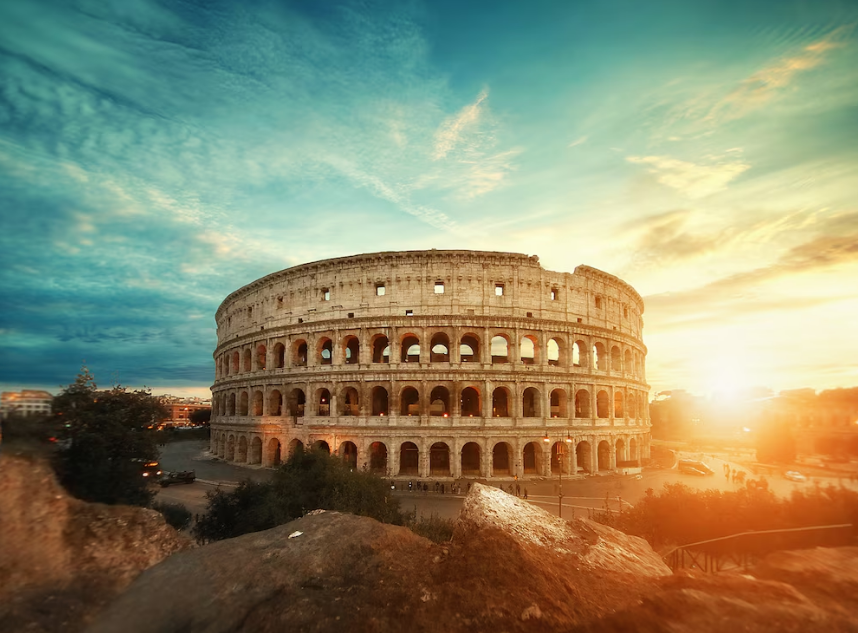
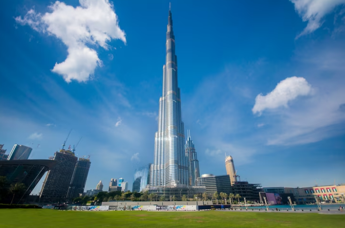
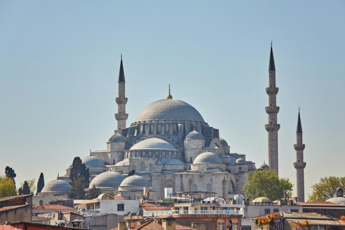

| Home | Contact | About us | |||
International Tour | |||||
|  | |||||
Italy |
|||||
People are drawn to visit Italy for its irresistible blend of historical richness, cultural treasures, and culinary delights. From the ancient ruins of Rome to the Renaissance art of Florence, Italy offers a captivating journey through time. Its stunning landscapes, from the rolling hills of Tuscany to the dramatic coastlines of the Amalfi Coast, provide a picturesque backdrop for exploration. Italy's culinary scene is equally enticing, with mouthwatering pasta, pizza, gelato, and world-class wines awaiting discovery. Whether savoring the flavors of local cuisine, marveling at iconic landmarks, or simply soaking in the vibrant atmosphere of its charming cities, Italy promises an unforgettable travel experience that captivates the senses and leaves a lasting impression. | |||||
|  | |||||
Dubai |
|||||
People are drawn to visit Dubai for its unparalleled blend of futuristic architecture, luxurious experiences, and vibrant cultural offerings. From the iconic Burj Khalifa, the tallest building in the world, to the man-made Palm Jumeirah island, Dubai boasts architectural marvels that captivate the imagination. Visitors are also enticed by the city's opulent shopping malls, world-class dining scene, and thrilling entertainment options, including desert safaris, water parks, and luxury resorts. Dubai's rich cultural heritage is showcased in its traditional souks, historic neighborhoods, and museums, offering a fascinating glimpse into the emirate's past and present. Whether seeking adventure, relaxation, or indulgence, Dubai promises a memorable and multifaceted travel experience unlike any other. | |||||
|  | |||||
Turkey |
|||||
People are compelled to visit Turkey for its captivating blend of ancient history, breathtaking natural landscapes, and vibrant cultural heritage. From the stunning architecture of Istanbul's Hagia Sophia and the historic ruins of Ephesus to the otherworldly landscapes of Cappadocia's fairy chimneys, Turkey offers a wealth of attractions that appeal to travelers of all interests. Visitors can immerse themselves in the country's rich cultural tapestry by exploring bustling bazaars, sampling delicious Turkish cuisine, and experiencing traditional rituals like the Turkish bath. With its warm hospitality, diverse attractions, and timeless charm, Turkey promises an unforgettable travel experience that leaves a lasting impression on all who venture there. | |||||
Copyright 2024.All Rights reserved. |
|||||